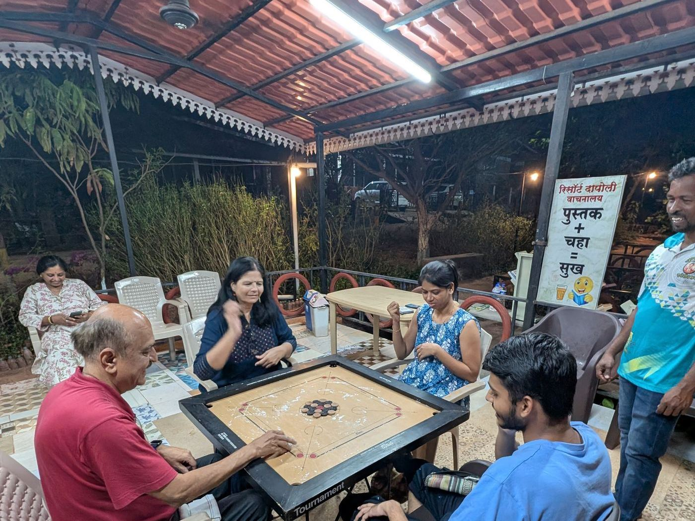

Working from a holiday home
Four or five working days a month from the coast changes the maths on owning a second home. Here is how owners set it up.

What makes it work
Connectivity
High speed 5G WiFi is provided in every bungalow, which supports remote working with good quality audio and video calls.
Power to every plot
MSEB sanctioned supply comes to the plot itself. An inverter keeps the router and laptop going through a monsoon outage.
A room with a door
One enclosed, quiet, well-lit corner is all it takes. Orient it east or north and it stays comfortable through the afternoon.
Meals taken care of
The central kitchen is the quiet advantage. Not thinking about lunch is most of what makes a working week here feel different from one at home.
What a working week looks like
Drive down Thursday evening, work Friday and Monday from the verandah or the study, and keep the weekend in between. The library and tea corner, the green gym and the walkways are there when you close the laptop, and the beach is twenty minutes away.
Common questions
Is the internet good enough to work from Dapoli?
High speed 5G WiFi is provided in every bungalow, which supports remote working with good quality audio and video calls.
What about power?
MSEB sanctioned supply reaches every plot. Most owners add an inverter so the router and laptop keep running through any monsoon outage.
How many days a month do people work from here?
The common pattern is a long weekend extended by two or three working days, so four to six working days a month without touching your leave.
Try it before you buy
Come down for a site visit and run a speed test standing on the plot you like. WhatsApp Kedar for more information.